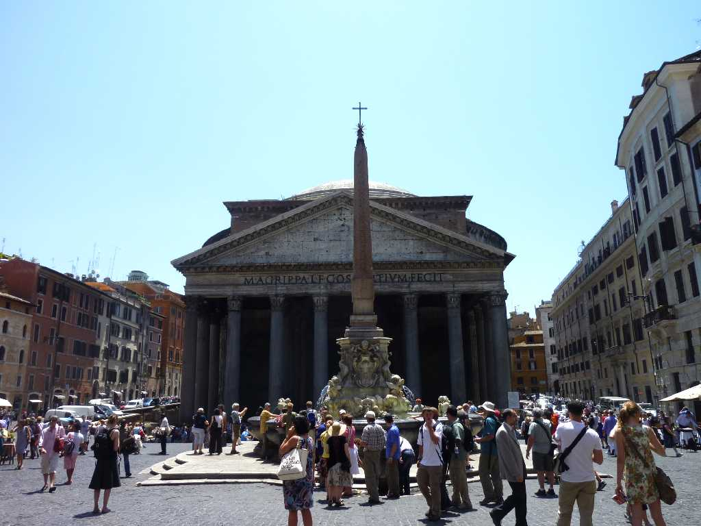
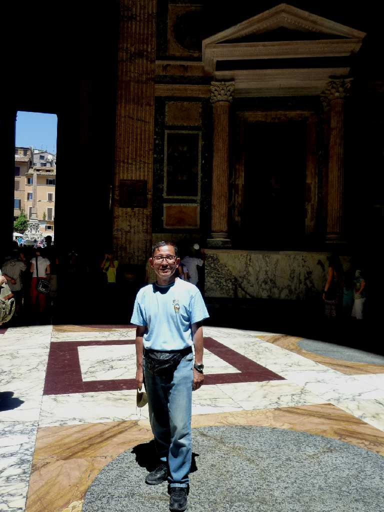

Pantheon Roma
紀元前２５年に初代ローマ皇帝アウグストスが神殿を創ったが焼失し紀元後１２８年皇帝ハドリアヌスによって再建されたもので様々なローマの神を祀った神殿でありパンテオンはギリシャ語ですぺての神々を意味している

June 23 2011 Pantheon
直径４３.2ｍ高さ４３.2ｍで改築するのが困難な創りとなっているため今に残っていいる またラファエロの墓がここに祀られている